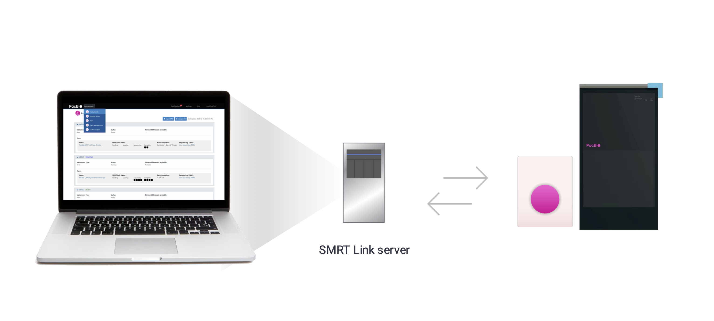
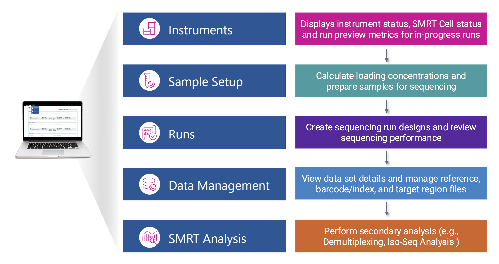

Home
Welcome to the beta release of PacBio’s new SMRT Link documentation site. In a future release, the PDF guides will be retired and replaced by this online resource. We value your feedback, please email your comments and suggestions to pacbiosoftwaredocs@pacb.com.
This site describes the procedure for installing SMRT Link v25.3 or SMRT Link Lite v25.3. This site is for IT or SMRT Link administrators.
Note
SMRT Link v25.3 and SMRT Link Lite v25.3 support Vega™ and Revio® systems. Sequel® II systems, Sequel® IIe systems, and Sequel® systems are not supported.
What is SMRT Link?
SMRT Link is a web-based end-to-end workflow manager.
SMRT Link is free PacBio-provided software required for instrument management, sequencing run setup/monitoring, and viewing performance metrics. SMRT Link can also optionally be configured to run select analysis workflows – depending on compute resources available – by interfacing with existing job management systems (e.g., SLURM).
SMRT Link software operates as a web service hosted on a dedicated Linux server, a virtual machine (VM), or by PacBio in the cloud. After installation, users interact with PacBio instruments and analysis workflows through a graphical user interface (GUI). The service is network-accessible, meaning you can connect to it from any computer with a supported web browser on the same network.

Visit System Requirements for more information on the prerequisites for installing SMRT Link including hardware (e.g., CPU, RAM, disk space), software (e.g., operating system), and network configurations.
SMRT Link modules

SMRT Link options
SMRT Link is available for both local installation and cloud access, offering flexibility to work in different environments depending on your lab's needs. This guide covers the installation of SMRT Link and SMRT Link Lite, but noting that PacBio also offers a cloud-based solution for SMRT Link.
- SMRT Link: A fully-featured on-prem solution
- Provides all the features of SMRT Link including push-button secondary analysis capabilities (SMRT Analysis)
- SMRT Link Lite: An is an on-prem solution with minimal hardware requirements
- Ideal if there are network restrictions preventing cloud use
- No push-button secondary analysis
- SMRT Link Cloud: A fully managed cloud solution
- Provided and hosted by PacBio (free)
- Enables quick setup for running the instrument
- No push-button secondary analysis
- SMRT Tools: SMRT Tools are the command-line tools included with SMRT Link. These are developer tools for use by bioinformaticians working with secondary analysis results.
| SMRT Link features | SMRT Link | SMRT Link Lite | SMRT Link Cloud |
|---|---|---|---|
| Supported instruments¹ | Revio, Vega, and Sequel IIe | Revio, Vega, and Sequel IIe | Revio and Vega |
| Instrument monitoring | ✅ | ✅ | ✅ |
| Sample setup | ✅ | ✅ | ✅ |
| Run design | ✅ | ✅ | ✅ |
| Run monitoring/QC | ✅ | ✅ | ✅ |
| Push-button secondary analysis (SMRT® Analysis) | ✅ | ❌ | ❌ |
| 3rd party and PacBio Compatible Partners analysis | ✅ | ✅ | ✅ |
| API access | ✅ | ✅ | ✅ |
For more information, check out the SMRT Link Application Brief.
Latest version
Version 25.3: Release Notes
The latest version of SMRT Link can be downloaded from PacBio's Software Downloads page.
curl -O https://downloads.pacbcloud.com/public/software/installers/smrtlink-release_25.3.0.273777.zip
What's new
Below are a few high-level updates to version 25.3. For the full set of updates, please see the release notes:
- Run design and analysis support for the PureTarget carrier screening panel and extended repeat expansion panel
- Single Sign-On (SSO) support for on-premises installations
Getting started
Visit Quick Start Guide or check out our SMRT Link Install tutorial video!